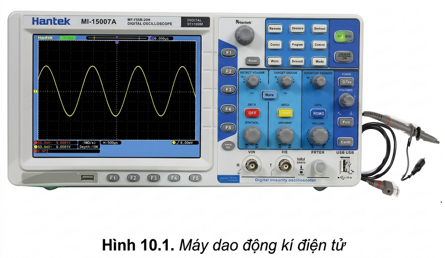
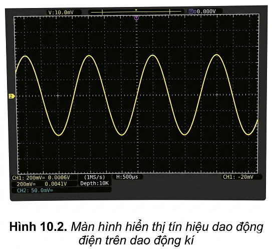
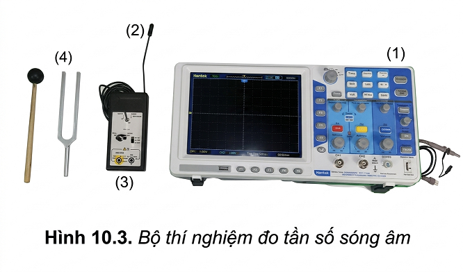
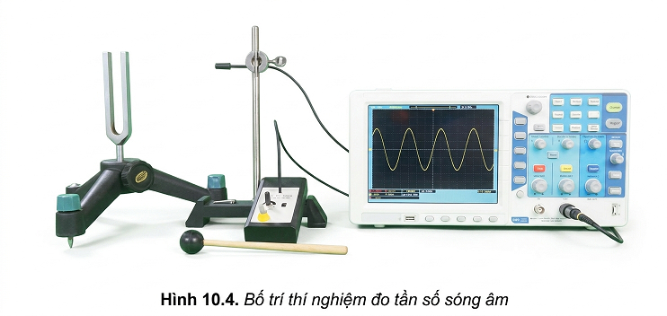

Dao động kí là thiết bị dùng để hiển thị trên màn hình dạng tín hiệu đưa vào cần quan sát. Khoảng tần số đo được phụ thuộc vào từng loại dao động kí.
Dao động kí có các tính năng cơ bản sau:
Cách sử dụng dao động kí để đo tín hiệu:


❓ Vấn đề:
Quan sát màn hình hiển thị tín hiệu dao động điện trên dao động kí (Hình 10.2), hãy xác định tần số dao động của tín hiệu.


Quan sát thí nghiệm Hình 10.4. Trả lời các câu hỏi sau:
Để dao động kí hiển thị dòng điện từ micro đi vào dao động kí thực hiện như sau:
Bảng 10.1
| Đại lượng | Lần 1 | Lần 2 | Lần 3 | Giá trị trung bình |
|---|---|---|---|---|
| Chu kì \( T(s) \) | ? | ? | ? | ? |
| Tần số \( f(Hz) \) | ? | ? | ? | ? |
Đo được tần số của sóng âm bằng cách sử dụng dao động kí.
Sử dụng một số phần mềm trên điện thoại thông minh để chỉnh dây đàn ghita.
Các nhạc cụ có thể phát ra các nốt nhạc cơ bản có tần số như Bảng 10.2. Với các quãng tám khác nhau thì tần số các nốt nhạc cũng có sự thay đổi.
Bảng 10.2. Bảng tần số các nốt nhạc cơ bản
| Nốt nhạc (Kí hiệu) | Tần số (Hz) |
|---|---|
| Đô (C) | 262 |
| Rê (D) | 294 |
| Mi (E) | 330 |
| Pha (F) | 349 |
| Son (G) | 392 |
| La (A) | 440 |
| Si (B) | 494 |
Bài 1:
Trên màn hình dao động kí, người ta quan sát thấy một chu kì sóng âm chiếm chính xác 4 ô theo phương ngang. Biết rằng nút SEC/DIV đang được đặt ở vị trí \( 0,5 \text{ ms/div} \). Hãy tính chu kì \( T \) và tần số \( f \) của sóng âm này.
Bài 2:
Tần số ghi trên một âm thoa chuẩn là \( 440 \text{ Hz} \). Khi tiến hành đo bằng dao động kí, một học sinh đếm được 5 chu kì sóng liên tiếp chiếm tổng thời gian là \( 11,4 \text{ ms} \). Tính sai số tỉ đối (phần trăm) của phép đo so với giá trị chuẩn ghi trên âm thoa.
Bài 3:
Dựa vào bảng tần số các nốt nhạc cơ bản (Bảng 10.2). Một dây đàn ghi ta khi gảy phát ra âm có chu kì đo được trên dao động kí là \( T = 3,03 \text{ ms} \). Hỏi âm do dây đàn phát ra gần nhất với nốt nhạc nào?